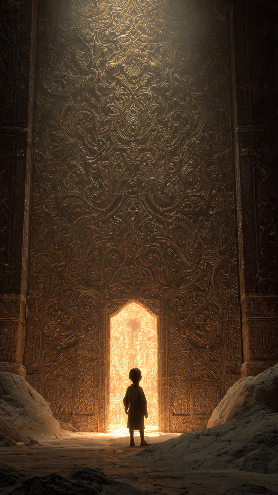
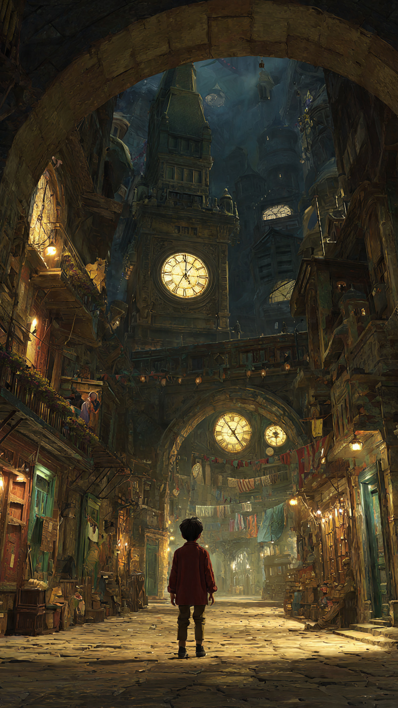

```html
🗝️ المفتاح الذهبي الذي فتح باب الزمن | قصص أطفال
```
في مدينة قديمة مليئة بالأسرار، كان يعيش طفل اسمه مالك.
كان مالك يحب الأشياء القديمة، وكان دائمًا يبحث عن القصص المخفية خلف الأبواب المغلقة والكتب المهجورة.
في يوم من الأيام، بينما كان يلعب بالقرب من منزل جده القديم، وجد صندوقًا خشبيًا صغيرًا مغطى بالغبار.
فتح الصندوق بحذر...
فوجد داخله مفتاحًا ذهبيًا لامعًا.
كان المفتاح مختلفًا عن أي مفتاح رآه من قبل.
عليه نقوش غريبة تشبه الساعات والنجوم.
وبجانبه ورقة صغيرة مكتوب عليها:
"هذا المفتاح لا يفتح بابًا عاديًا..."
"بل يفتح باب الزمن."
تعجب مالك وقال:
"باب الزمن؟ هل هذا حقيقي؟"
قرر أن يبحث عن سر المفتاح.
ذهب إلى مكتبة جده القديمة، وبدأ يقلب الكتب حتى وجد كتابًا قديمًا عن الأساطير.
كان الكتاب يحكي عن باب مخفي في المدينة، لا يظهر إلا لمن يحمل المفتاح الذهبي.
في آخر صفحة وجد خريطة صغيرة.
كانت تشير إلى مكان تحت برج قديم في وسط المدينة.
ذهب مالك إلى هناك عند غروب الشمس.
وبين الحجارة القديمة، وجد بابًا صغيرًا لم يره أحد من قبل.
كان عليه نفس النقوش الموجودة على المفتاح.
أدخل مالك المفتاح ببطء...
وفجأة بدأ الباب يلمع.
ثم سمع صوتًا يقول:
"هل أنت مستعد لرؤية أسرار الزمن؟"
📷 الصورة رقم 1

فتح مالك الباب ببطء.
في البداية لم يرَ شيئًا سوى ضوء ذهبي قوي.
ثم شعر وكأنه يطير عبر نفق مليء بالساعات والنجوم.
وعندما فتح عينيه...
وجد نفسه في مكان مختلف تمامًا.
كانت المدينة كما يعرفها، لكنها قديمة جدًا.
كانت العربات تسير في الشوارع، والناس يرتدون ملابس من زمن بعيد.
نظر مالك حوله بدهشة وقال:
"لقد سافرت عبر الزمن!"
اقترب منه رجل عجوز يحمل كتابًا كبيرًا.
قال:
"أهلًا بك يا مالك، لقد كنا ننتظر حامل المفتاح."
تعجب مالك وسأله:
"كيف تعرف اسمي؟"
ابتسم الرجل وقال:
"لأن المفتاح يختار الشخص الذي يملك الفضول والقلب الطيب."
أخبره الرجل أن المفتاح الذهبي يحمي أسرار الزمن، لكنه يحتاج إلى شخص يساعده في مهمة مهمة.
قال:
"هناك حدث في الماضي قد يغير مستقبل المدينة."
أعطاه كتابًا قديمًا وقال:
"يجب أن تجد الصفحة المفقودة من هذا الكتاب."
بدأ مالك يبحث في المدينة القديمة.
دخل مكتبات قديمة، وتحدث مع أشخاص من الماضي، واكتشف قصصًا لم يسمع عنها من قبل.
وأثناء البحث، وجد مكانًا مخفيًا تحت القلعة القديمة.
هناك وجد الصفحة المفقودة...
لكن بجانبها كان هناك شيء آخر.
رسالة كتبها شخص من المستقبل.
فتح مالك الرسالة، وقرأ كلمات جعلته يشعر بالدهشة.
لقد اكتشف أن مهمته الحقيقية لم تبدأ بعد.
📷 الصورة رقم 2

فتح مالك الرسالة ببطء.
كانت الكلمات تقول:
"إلى من يحمل المفتاح الذهبي..."
"تذكر أن الزمن ليس مجرد ماضٍ ومستقبل، بل هو مجموعة من اللحظات التي نصنع فيها الخير."
فهم مالك أن المهمة لم تكن فقط العثور على الصفحة المفقودة...
بل معرفة كيف يحافظ على أسرار الزمن دون أن يغير حياة الآخرين.
أعاد الصفحة إلى الكتاب القديم، وفجأة بدأ المفتاح الذهبي يلمع بقوة.
ظهر باب من الضوء أمامه.
قال الرجل العجوز:
"لقد نجحت يا مالك."
سأل مالك:
"هل أستطيع زيارة الماضي مرة أخرى؟"
ابتسم الرجل وقال:
"يمكنك دائمًا أن تتذكره..."
"لكن أجمل مكان هو اللحظة التي تعيشها الآن."
عاد مالك عبر الباب الزمني إلى مدينته.
عندما فتح عينيه، وجد نفسه بجانب البرج القديم.
كان كل شيء كما كان، وكأن الرحلة لم تستغرق إلا دقائق.
نظر إلى المفتاح الذهبي.
لكنه لم يعد يلمع كما كان.
فقد أصبح مجرد مفتاح عادي...
لكن ذكريات الرحلة بقيت في قلبه.
منذ ذلك اليوم، أصبح مالك يحب التاريخ أكثر من أي وقت مضى.
كان يقرأ عن الماضي، ويتعلم منه، ويخبر الآخرين أن كل زمن يحمل قصة تستحق أن تُروى.
وكان دائمًا يقول:
"لا يمكننا تغيير كل ما حدث..."
"لكن يمكننا أن نجعل اللحظة التي نعيشها الآن أفضل."
🗝️⏳ انتهت القصة ⏳🗝️
العبرة:
الماضي يعلمنا، والمستقبل ينتظرنا، لكن أهم شيء هو أن نستخدم حاضرنا لصنع الخير.